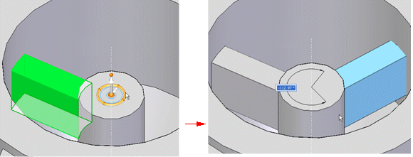
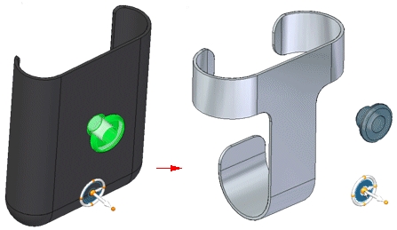

Copying and cutting elements
When you select a set of elements to cut or copy, the following information is added to the clipboard:
-
The current orientation of the select set relative to base reference planes of the source document.
-
PathFinder Structure
-
Any complete face sets
-
Occurrence structure of any procedural feature
-
-
Individual elements
-
Loose faces that do not comprise a complete face set
-
Sketch elements, but not an entire sketch
-
Face style override, if defined
-
-
User-defined sets
-
All eligible items contained in the collection
-
Patterns behave differently depending on what is selected. When a pattern or all occurrences of a pattern is selected for copy, the following information is recorded:
-
All occurrences of the pattern
-
Occurrence structure
-
Pattern attributes
-
All information needed to regenerate the pattern
When a pattern occurrence is selected for copy, the following information is recorded:
-
Face geometry
-
If multiple, but not all, occurrences are copied, only the geometry is copied.
There are several ways to copy an element.
-
Select the element you want to copy, press the Ctrl key, and click an arrow of the steering wheel that is in the direction you want to copy. To complete the copy, drag the cursor to a new location and either click or type in a distance to copy the element.

-
Select an element, and then click the Copy button on the command bar after initiating a move or rotate.
-
Right-click an element and select Copy.
-
Press Ctrl+C on an element.
-
To copy during rotate, press the Ctrl key, and click a torus of the steering wheel. To complete the copy, drag the cursor to a new location and either click or type in an angle to copy the element.

When you select geometry to copy, the steering wheel appears. The location and orientation of the steering wheel is recorded. The steering wheel location is relative to the selected geometry and the orientation is recorded relative to the source document.

Copying 2D elements
-
When copying 2D elements, sketches and sketch elements follow the same rules as solids. You can copy the entire sketch or the sketch elements that make up the sketch. You can select multiple sketches collected from any plane.
Copying reference objects
-
Reference objects such as planes and coordinate systems can be copied and pasted. When pasted to a model, the elements are added to the target document’s PathFinder. The steering wheel provides orientation when the objects are pasted in the model.